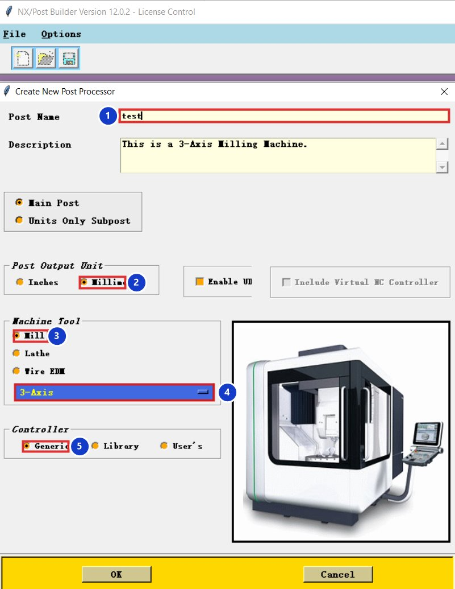
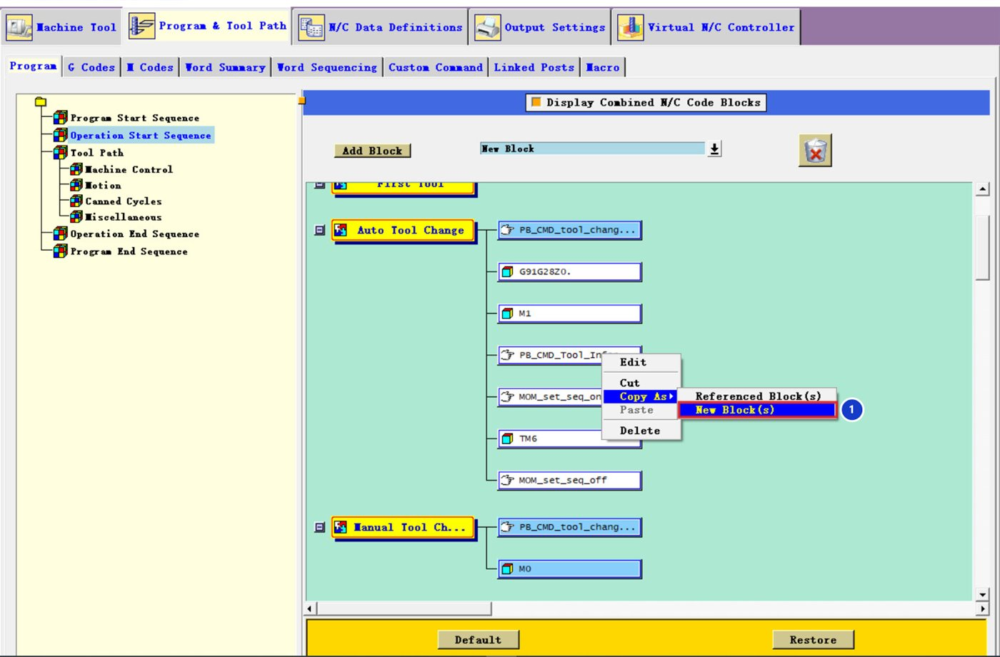

01
Mở Post Builder
Start menu → Post Builder (hoặc NX Manufacturing – Post Builder). Chọn File → New.
02
Điền hộp Create New Post Processor


| # | Ô | Chọn |
|---|---|---|
| 1 | Post Name | Tên không dấu, không khoảng trắng, ví dụ fanuc_3truc |
| 2 | Post Output Unit | Millimeters |
| 3 | Machine Tool | Mill |
| 4 | Loại máy | 3-Axis |
| 5 | Controller | Generic — mã kiểu Fanuc, dễ chỉnh nhất |
Bấm OK, rồi File → Save vào một thư mục riêng. Post Builder tạo 3 file cùng tên: .pui (file để mở lại bằng Post Builder), .tcl và .def (NX dùng khi xuất).
03
Các tab sẽ dùng nhiều
| Tab | Dùng để |
|---|---|
| Program & Tool Path → Program | Thứ tự khối ở đầu/cuối chương trình, thay dao, chuyển động, chu trình |
| Program & Tool Path → Custom Command | Thêm lệnh Tcl riêng (dao chờ, cảnh báo, mở CIMCO…) |
| N/C Data Definitions → BLOCK / WORD / FORMAT | Cách in từng từ: số 0 thừa, dấu chấm, biểu thức G54… |
04
Mẹo: sao chép khối thay vì tạo lại
Trong tab Program, chuột phải vào một khối → Copy As → New Block(s) 1 để tạo khối mới giống hệt rồi sửa, không làm hỏng khối gốc.


Thêm post vào NX
Cách nhanh nhất: trong hộp Postprocess của NX, bấm Browse for a Postprocessor và chọn file .pui vừa lưu.
Luôn sao lưu
Trước mỗi lần chỉnh, chép cả 3 file .pui .tcl .def sang thư mục khác. Hỏng thì chép lại là xong.